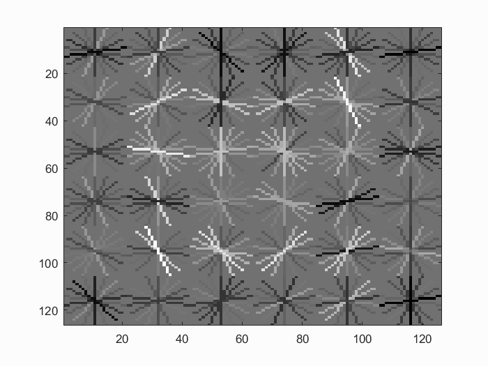

Project Description
This is the second project of MSBD6000C Computer Vision, you may find the introduction of it from here.
In this project, we created a model that can detect human faces.
Comparing with the success of face detection (and object detection in general) can be traced back to influential works such as Rowley et al. 1998 and Viola-Jones 2001, we developed a simpler (but still very effective!) sliding window detector of Dalal and Triggs 2005. Dalal-Triggs focuses on representation more than learning and introduces the SIFT-like Histogram of Gradients (HoG) representation (pictured to the right). We were responsible for the detection pipeline except HoG, though -- handling heterogeneous training and testing data, training a linear classifier (a HoG template), and using our classifier to classify millions of sliding windows at multiple scales.
Sample Results
Results of original detector:
Results of detector with Hard Negative Mining:
Develop Environment
Programming Language: MATLAB
Library: VLFeat binary package
OS: Windows
Algorithm
get_positive_features.m- 1. Extract image file names
- 2. Load images
- 3. Transform images from RGB to grayscale
- 4. Normalization
- 5. Compute HOG descriptors
- 6. Save the HOG features
- 1. Compute the candidates of possible values of x_min,y_min
- 2. Implement the generating candidates of negative samples
- 3. Extract and save HOG features
- 1. Connect the features of positive and random negative samples along the x-axis
- 2. Transpose the feature matrix
- 3. Connect the labels of positive and negative samples
- 4. Setup lamdba (suggested value: 0.0001)
- 5. Call vl_svmtrain
- 1. Visualize how well separated the positive and negative examples are at training time
- 2. Visualize the learned detector
- Original Detector:
- Detector with Hard Negative Mining 
- 1. Set the minimum confidence threshold
- 2. For each image, run the classifier at multiple scales
- 3. Call non_max_supr_bbox to remove duplicate detections
- Compute ROC curve, precision-recall curve, and average precision.
- Original Detector
- Detector with Hard Negative Mining
- Visualize detections in each image.